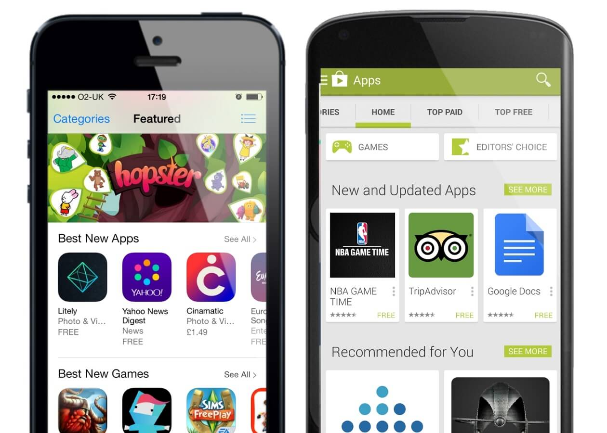

Программист — одна из самых молодых, постоянно развивающихся и востребованных специальностей. Это также очень разносторонняя профессия: спектр всевозможных сфер, применяющих программирование крайне широк.
Постараемся разобраться в некоторых видах программистов...
Web-программист
Одним из самых востребованных типов представителей программистов является специалист по созданию сайтов.

Данных программистов делят на три основных категории: Frontend, Backend и Fullstack.
Frontend разработчик
Видимая часть интернет-ресурса, открывающаяся в браузере после ввода запроса, называется клиентской или фронтендом. Оформлением, цветовой гаммой, расположением элементов занимаются UX и UI дизайнеры, после чего фронтендер реализует задумку дизайнера через код.
Фронтенд разработчики – это программисты, отвечающие за создание кнопок, виджетов, различных меню, слайдеров и анимаций. Все интерактивные элементы появляются на страницах благодаря им. Они пишут скрипты на языке JavaScript (не путать с Java), включают их через HTML-теги, стилизуют элементы через "каскадные таблицы стилей" CSS.
Backend разработчик
Не все знают о существовании данного подтипа программистов. Они пишут код, выполняемый на сервере, специальном компьютере, который хранит сайт.
Написав серверный код, вы, скорее всего, далеко не сразу сможете увидеть изменения. Он отвечает за изменения содержимого сайта, обеспечивает динамическую работу и "связывает" клиента с базой данных. Часто в вакансии для бэкенд разработчиков требуют навыки работы с различными операционными системами: Unix, Linux, Mac OS и Winows Server
Fullstack разработчик
Данный подтип объединяет в себе умения Frontend и Backend разработчиков. Такой универсальный программист должен сам писать код для визуала и для динамики сайта, администрировать сервер, работать с базами данных и, подчастую, создавать дизайн для сайта
Казалось бы, зачем нанимать целую команду дизайнеров, фронтенд и бэкенд разработчиков с разными специализациями, если есть один Fullstack... Но есть проблема в таком подходе: невозможно идеально знать все необходимые языки и технологии для реализации любого проекта. Тогда как для малых проектов универсалы подходят идеально, для больших проектов стоит нанимать узких специалистов, мастеров своего дела.
Разработчик программного обеспечения (ПО)
Система, софт, или программное обеспечение – это набор инструкций для компьютера. К ним относятся драйвера, утилиты, команды для аппаратных средств. Такой разработкой занимается системный инженер на "низкоуровневом языке".
Чтобы понять важность таких программистов стоит просто взглянуть на примеры: операционные системы, код для охранных систем, программы для автомобилей и космических кораблей создаются этими ребятами.
Шедевром системых инженеров можно считать работу последнего процессор от компании Apple, M1. При ограниченных ресурсах разработчики соединили в продукте близкую связь процессора и оперативной памяти, алгоритмы для нейронных сетей и невероятную эффективность
Разработчик игр
Создание консольной, компьютерной или мобильной игры – это многоуровневый процесс. В нем участвуют аналитики, специалисты по ИИ, рекламе и продвижению, различные дизайнеры: аудио-, гейм-, UI-, UX-дизайнеры и многие-многие другие люди, отвечающие за свою сторону продукта. Среди них есть, конечно же, и программисты.
Среди "геймдевов" можно выделить:
- Разработчик игрового движка
- Реализатор искусственного интеллекта через модели машинного обучения или нейронные сети
- Программист коммуникационных сетей для онлайн-проектов
- Программист по звуку, следящий за связью аудио, видео и событий в игровом мире
- Инженер устройств ввода (геймпад, клавиатура, мышь, руль и т.д.)

Разработчик мобильных приложений
Смартфоны стали неотъемлемой частью нашей жизни. С ростом значимости смартфона растет и спрос на мобильные приложения для обеспечения интерактивности интерфейса телефона, и добавления новых фукций девайсу.
Есть две основных операционных системы для смартфонов: Android и iOS (не будем вспоминать Windows Phone). Разные платформы, в силу различных принципов работы, требуют разного стека технологий – языков и инструментов разработки. Здесь также есть Frontend и Backend разработчики, но в случае с мобильной разработке проще знать весь цикл разработки и работать над любой частью проекта.
Инженер прикладного программного обеспечения
Этот тип очень похож на системного программиста. Он также работает с программами, которыми пользуется человек постоянно. Но с этими программами пользователь взаимодейстует непосредственно. Например, графические, текстовые редакторы, браузеры, видео и аудио плееры, среды разработки для других программистов и т.д.
Работа такого специалиста заключается в написании кода, его компиляции, отладке и тестировании, поддержание и обновление кода, добавление функциональности.
Ещё одна черта, отличающая этих разработчиков от системных инженеров – это высокий уровень языка программирования.